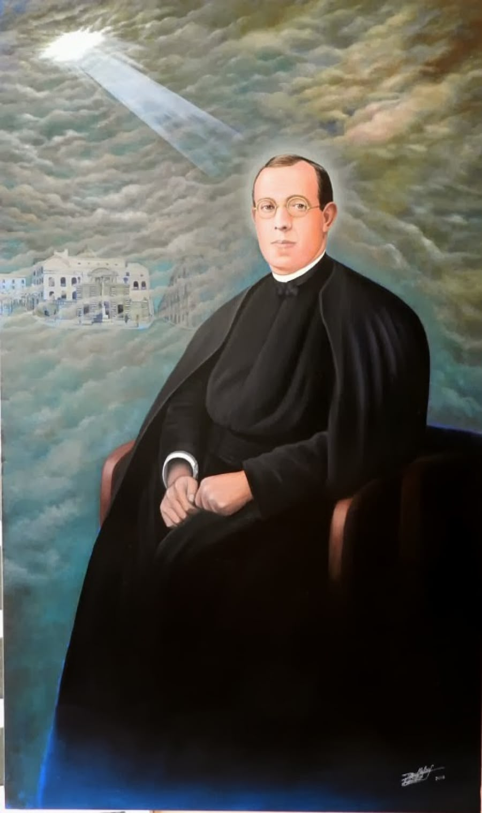

Su vida
Biografía y principales acontecimientos de su trayectoria.
Leer la biografíaVida · Obra · Testimonio · Martirio · Legado

1890–1936
Presbítero de la Orden de Clérigos Regulares de las Escuelas Pías y mártir.
Celebrado el 17 de agosto.
Enrique Canadell Quintana nació en Olot, Gerona, el 29 de junio de 1890. Fue sacerdote escolapio, educador y mártir. Desarrolló su ministerio en distintos colegios de las Escuelas Pías y murió el 17 de agosto de 1936 durante la persecución religiosa.
Recorrido
Este sitio presenta su trayectoria desde el nacimiento, su ingreso en las Escuelas Pías y su ordenación sacerdotal, hasta su labor educativa y sacerdotal, los acontecimientos de 1936, su martirio y su beatificación en 1995.
Biografía y principales acontecimientos de su trayectoria.
Leer la biografíaEducación, sacerdocio, evangelización, fe y servicio.
Conocer su vocaciónLos últimos meses, el traslado a Olot y el martirio del 17 de agosto de 1936.
Ver el recorridoSu reconocimiento como beato y su legado como escolapio, sacerdote, educador y mártir.
Ver el legadoSan Juan Pablo II beatificó a Enrique Canadell junto con otros doce escolapios martirizados en diversos días y lugares durante 1936.